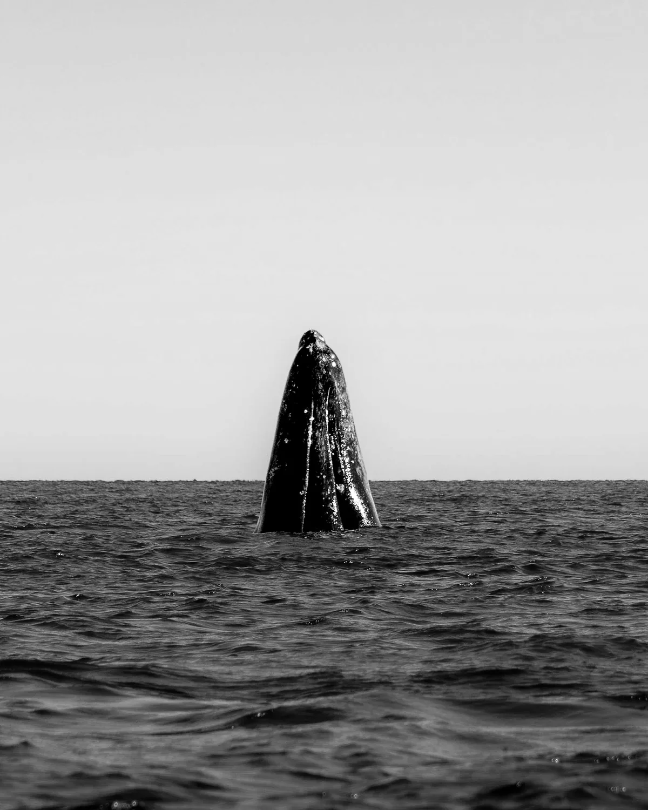

Observa
Una persona identifica un cetáceo durante una actividad en el mar o desde la costa.
Conectamos observaciones voluntarias con investigación y conservación para construir una visión más amplia de los cetáceos que habitan o visitan nuestras aguas.

El mar peruano alberga una gran diversidad de cetáceos que utilizan nuestras aguas para alimentarse, reproducirse, desplazarse y desarrollar diferentes actividades esenciales para su supervivencia.
Sin embargo, todavía existen vacíos de información sobre la presencia y distribución de muchas de estas especies a lo largo de nuestro litoral.
La Red Ciudadana de Avistamiento de Cetáceos del Perú, iniciada en 2025, busca contribuir a reducir estos vacíos mediante la recopilación colaborativa de observaciones realizadas por personas que interactúan con el mar.
A través de esta iniciativa, los interesados voluntarios pueden compartir sus registros y contribuir a construir una visión más amplia de los cetáceos que habitan o visitan nuestras aguas.
Cada registro constituye una oportunidad para ampliar el conocimiento disponible y fortalecer los esfuerzos de investigación y conservación marina.
Cuatro momentos convierten una observación individual en información útil para todos.
Una persona identifica un cetáceo durante una actividad en el mar o desde la costa.
Comparte fecha, lugar, especie —si puedes identificarla— y evidencia fotográfica o de video.
El equipo evalúa la identificación y verifica los datos disponibles de acuerdo con criterios establecidos.
Los registros que cumplen los criterios se incorporan a la base de datos y amplían el conocimiento.
Muchas personas observan cetáceos durante sus actividades cotidianas, faenas de pesca, viajes turísticos o recorridos por la costa.
Estas observaciones pueden aportar información complementaria a los estudios científicos y contribuir a identificar áreas y periodos de presencia de distintas especies.
La ciencia ciudadana permite conectar esos conocimientos con iniciativas de investigación y conservación, siempre que los registros se documenten adecuadamente y se interpreten considerando sus limitaciones.

Al realizar un avistamiento de cetáceos, es fundamental seguir las buenas prácticas que permitan disfrutar de su observación sin poner en riesgo su bienestar.
Aprende las buenas prácticas →La Red es impulsada por Proyecto Cetáceos Perú y cuenta con el apoyo de Smithsonian Institution.
Proyecto Cetáceos Perú
Smithsonian Institution